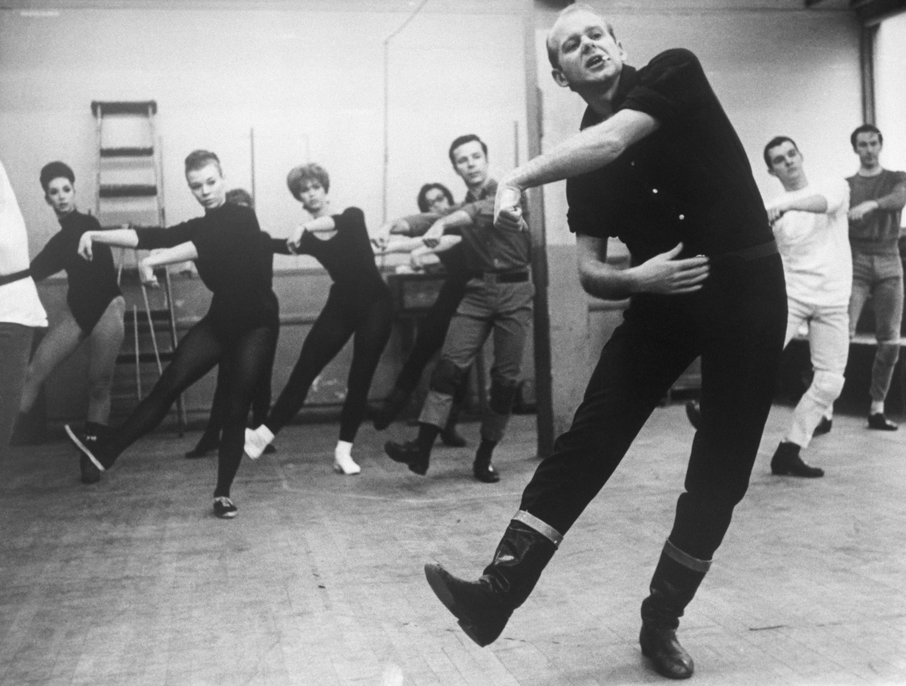
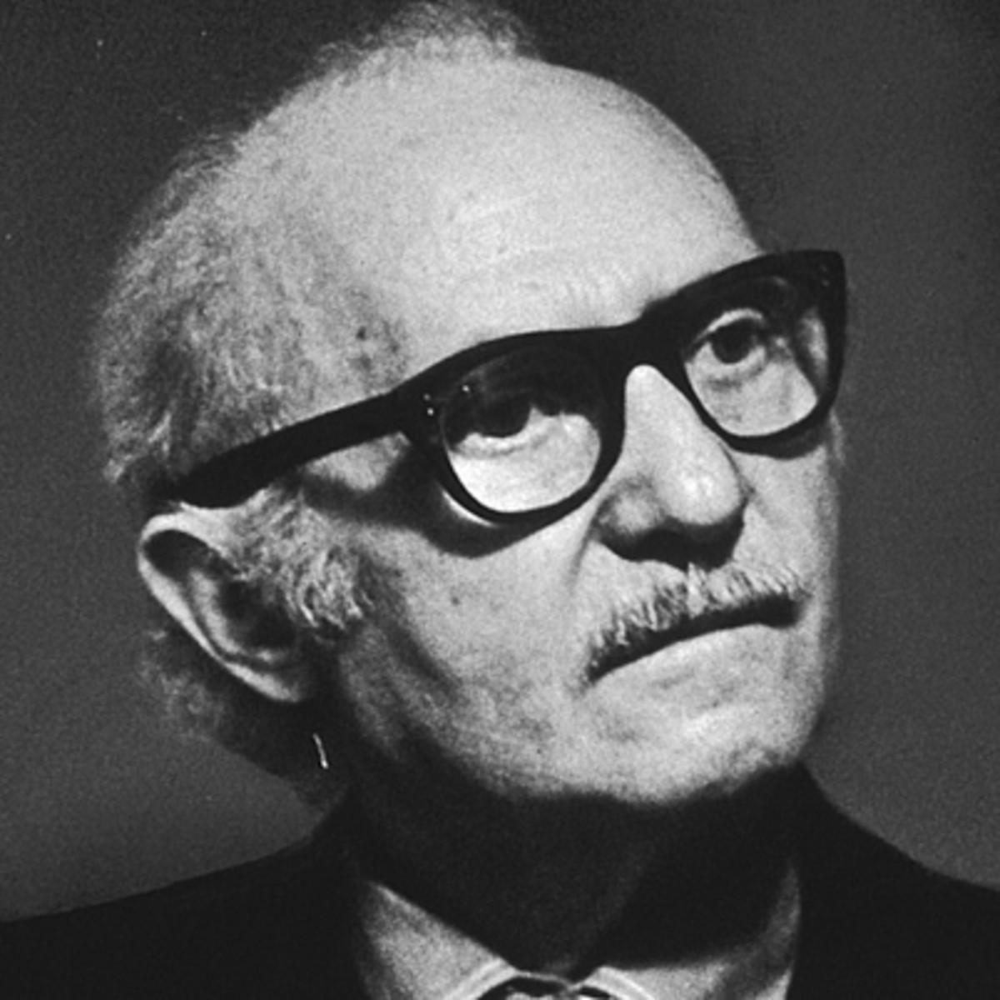

Choreography is a big part of a Broadway show. Some of the most famous choreographers include: Bob Fosse, who choreographed shows like "The Pajama Game," "Sweet Charity," "Chicago," and "Pippin." Another very famous choreographer is Jerome Robbins, who choreographed shows like "West Side Story," "On the Town," "Gypsy" and "Fiddler on the Roof." Some other notable choreographers include Tommy Tune, Susan Stroman, and Michael Kidd. You can read some more on Playbill.com
A Broadway show cannot run without a director. Directors are the people who control the entire show. Some of the most famous directors have directed many shows. An example is Lee Strasberg, who is most famous for directing "South Pacific." In addition, Strasberg invented an acting technique called "Method Acting," which is still used throughout theater. Another very famous director is Julie Taymor, who is most famous for directing "The Lion King." You can read some more on Backstage.com
